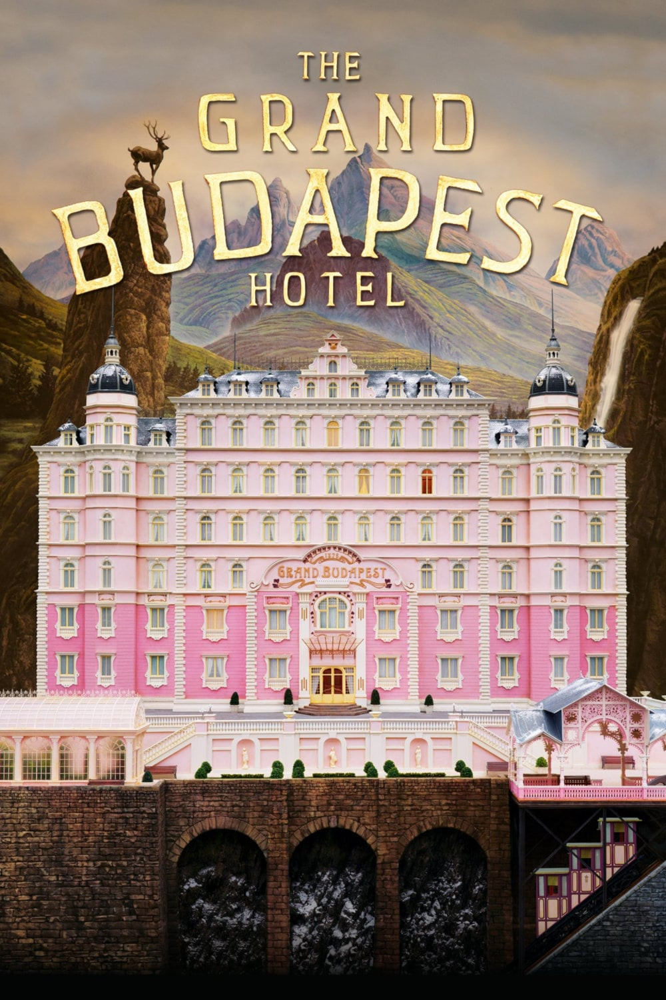
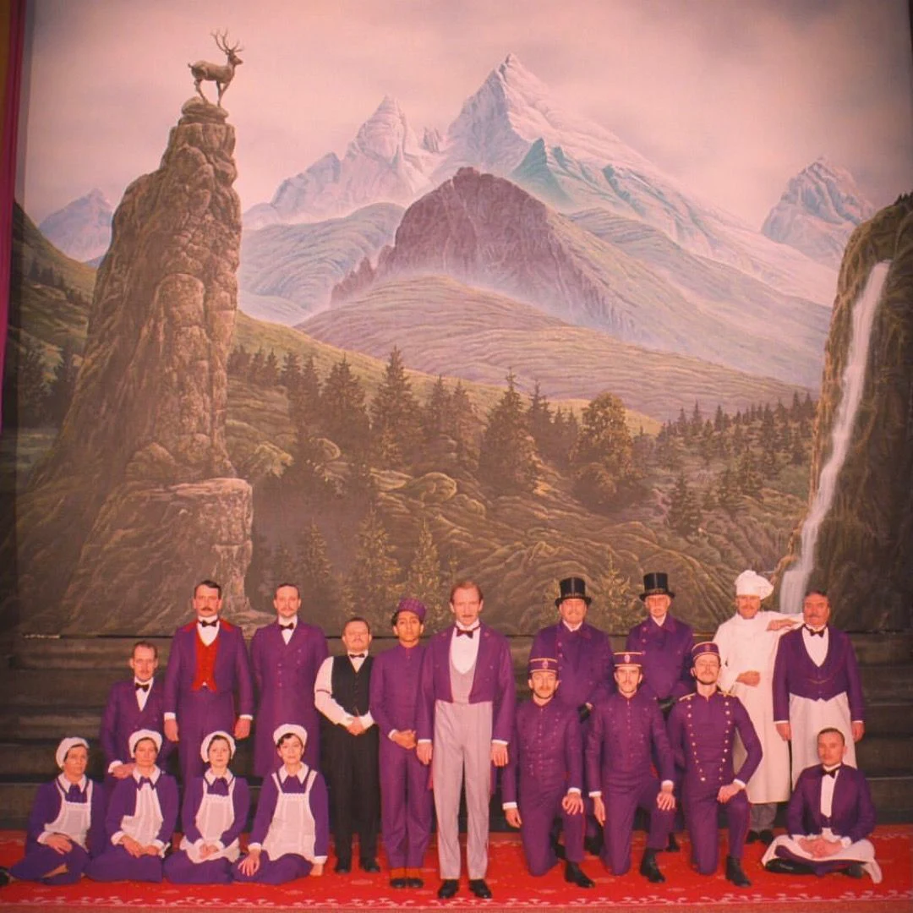
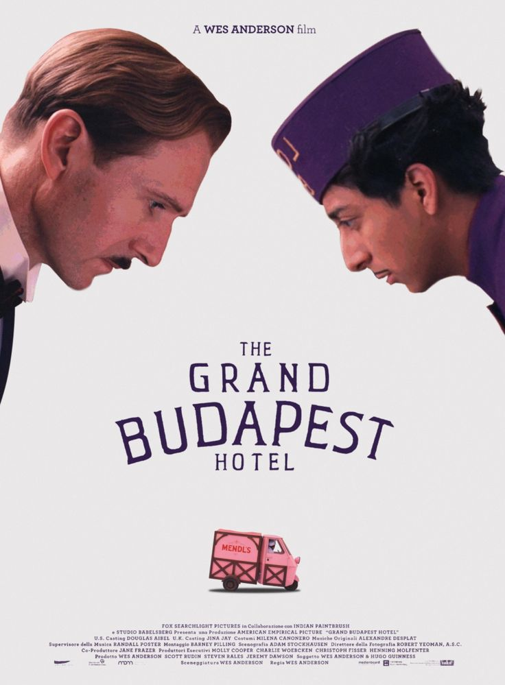

Comedy, Drama, Crime
2014
100 minutes
Wes Anderson
The Grand Budapest Hotel follows the adventures of M. Gustave, a legendary concierge at a famous European hotel, and Zero Moustafa, his loyal lobby boy. After one of Gustave's wealthy guests dies and leaves him a priceless painting, the pair become entangled in a murder mystery, a stolen fortune, and a battle for family inheritance against the backdrop of a changing Europe.